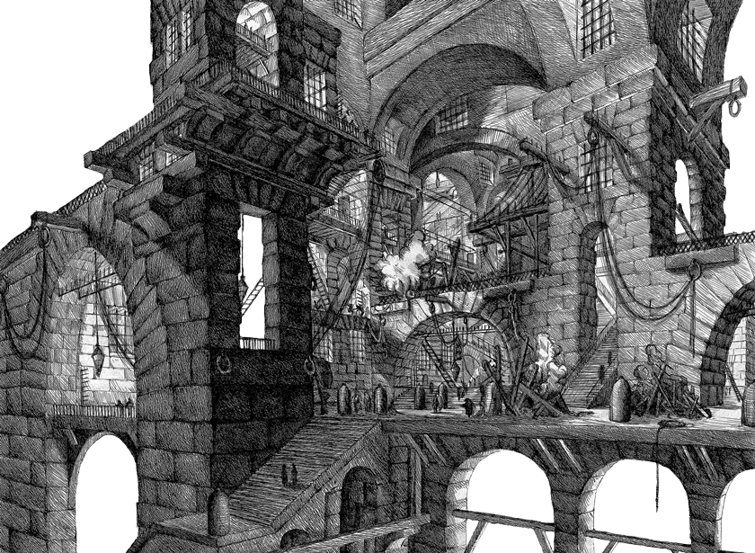
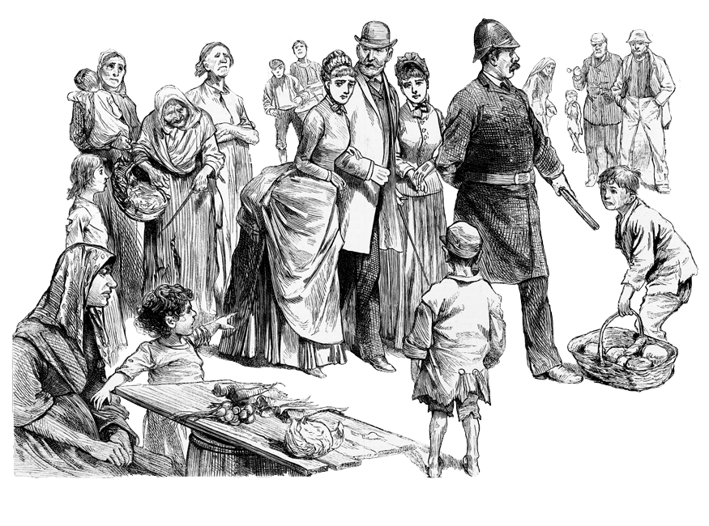

Notices of New Books
The New Priest in Conception Bay
Robert Traill Lowell
There are two ways of destroying a man’s reputation — one by misrepresenting his conversation, the other by slandering his life. Novels, in which religious controversies are conducted in the form of dialogues between champions of opposite doctrines, resemble the former, while those in which a creed is assailed by a well wrought story, imputing all manner of wicked deeds to its followers, belongs to the latter class of evil speaking. The controversial form, of which there are many examples is generly so silly as to be harmless. The shallow trick of setting up just such of your adversaries arguments as you can without difficulty knock over, is easily seen through. It is the old story of the artist, trying to convince the lion of man’s superiority by showing a picture of a lion, subdued by a man. The other form is more insidious. A well told tale although pure fiction, for the time at least, has and is intended to have all the effect of a statement of facts. If the story be capable of exciting any interest it is only because its incidents have so nearly the form of truth as temporarily to deceive the judgment. This, though perfectly allowable when it is merely intended to excite the imagination, to amuse, interest, or even convey some sound moral in the form of fiction, becomes, when it is made the vehicle of an assault upon a faith by representing its priests as guilty of indictable offences, and its people as invariably ignorant and ruffianly, to speak plainly, very much like malicious lying. The New Priest in Conception Bay is a work of this class. It is a story of Newfound land, the object of which seems to be to exalt the Church of England by vilifying the Church of Rome. Church of England by vilifying the Church of Rome.
The plot is briefly as follows: A married man with a lovely wife and several children becomes a priest in the Catholic Church, and of course parts with his family. All this occurs prior to the beginning of the tale which opens at Peterport, a small fishing village on the coast of Newfoundland, where the wife appears in the character of a beautiful, mourning widow, with one child, the others having died, and the husband in the person of the “new Priest.” There were two other priests, Fathers Terrence and Nicholas, the one a good matured and simple Irishman, the other the villain of the story. There is moreover a good old fisherman with a lovely daughter, who is so unhappy as to get into bad odor with the Catholics, because a young man designed for the priesthood falls in love with her, declining holy orders in consequence. The fisherman’s daughter, becomes greviously sick, and when, after lingering long at the very gates of death, she begins to come round, in a moment of delirium, during the absence of her nurse, escapes from the house and is not seen again at Peterport for a long time. It afterwards appears that she, naturally enough took the direction of the home of her lover — whose family were Catholics — and there by a combination between an old Irish hag and father Nicholas and some nuns — she was carried off — in a punt to a nunnery. From this place she makes her escape after a few days, and mysteriously gets aboard of the “Spring Bird,” a brig which has just left Peterport for Madeira and a market. Appearing here in the midst of a fog, she is taken for a ghost, and has a handspike thrown at her head by a sailor — but is
soon, however, recognized and made much of.
Notwithstanding the absurdity of the story — and the unwarrantable mode of attacking a religion to which the author is opposed, the book is worth reading for its apparently faithful delineations of the scenes and manners of a very strange corner of the globe. It shows such powers of description, such command of good English — and such a happy faculty of presenting the peculiarities of dialect of his characters, including a very good specimen of Yankee — that we are inclined to suspect it to be the production of the distinguished author of “The Life and Adventures of a Clock Pedlar.”
. . . . .
Future Life, orScenes in Another World
George Wood

T
he author of this book, whose very clever work entitled “Peter Schlemihl in America,” has already established his claim to the consideration of general readers, has endeavored here, in the form of an ideal picture of future life, to paint in striking colors the familiar scenes of the life around us. The production is by no means a caricature, and the delineation of the fashions and the tollies of the age conveys to the mind, we think, a very faithful, though perhaps not a very flattering impression.
. . . . .
The New American Cyclopedia Volume Four
Messrs. Appleton & Co.
I
t comprises a vast variety of articles ranging between the letters BRO and CHA, and embracing almost every possible subject that is open to reference. We have heretofore expressed a high opinion of the merits of this useful publication, and a careful examination of the contents of the volume before us has only added to our conviction of its value. On all subjects of special interest to American readers it is unquestionable. So great a mass of information, as is here presented, could only have been given by close condensation and a careful pruning of all extraneous matter. It is in this respect that the talent of the editors is particularly manifest. Every thing that is essential in a popular manual will be found under its appropriate head. Facts alone are given — the reader being left wholly free to draw his own conclusions. So far, the work has been carried out in a careful regard to the wants of the American public. To the articles usually introduced into works of this class a vast amount of original matter has been added, not only in the arts and sciences, but also in general literature, and particularly will this be found the case in those departments of knowledge which are frequently touched upon too lightly in foreign books of reference. The New American Cyclopedia is, moreover, eminently practical. There is nothing speculative about it. The great merit of the work is that it compresses, into the smallest possible compass, a large amount of information upon almost every imaginable subject, while the style in which the articles are written is peculiarly clear and chaste.
. . . . .
The Tenant House, orEmbers from Poverty’s Hearthstone
A.J.H. Duganne

T
he author of this book, although his name does not appear upon the title page, is, we believe, Mr. A.H. Duganne, a gentleman not unknown in the literary world, and with whose occasional lyrics, more terse than poetic, some of our readers are probably familiar. As Chairman of a Committee appointed by the Legislature of New York to investigate and report upon the evils of the tenant house system, Mr. Duganne, in the prosecution of the duty assigned to him, was enabled not only to lay before the Legislature a mass of valuable statistics upon the subject, but also to gather, in the course of his perambulations, many of the facts and incidents which he has worked up into the present volume. Like the “Hot Corn” stories of Solon Robinson, “The Tenant House” treats of low life in New York, and may be correctly defined, as a body of facts
dressed in the garb of a Romance. The aim of the writer has been to show how the poor outcasts of society live; the temptations to which they are exposed; the vices into
which they are betrayed, and the diseases to which their debased condition subjects them. The book itself, though of the “sensation” class, conveys an impressive moral —
many of its incidents being of a deeply tragic cast. It is vigorously written, and as it has been warmly commended by quite a number of New York Clergymen, it is doubtless
destined to acquire considerable popularity.
. . . . .
We have received from Lucas & Brothers, the “Baltimore Mercantile Calendar” for 1859. It is a neatly printed sheet, containing, in addition to the almanac for 1859, a list of the Banks and Banking houses of this city, together with a considerable amount of useful information, with reference to our Railroads, Steamers, Insurance Offices, City Government, Foreign Consuls, &c.
We have received, also, from Mr. N. Hickman, agent of Messrs. Leonard Scott & Co., publishers, the November number of Blackwood, containing the following articles: Buckle’s History of Civilization; Part XVIII of Bulwer’s "What will he do with It? Edward Irving; Light on the Hearth — Part III; Cherbourg the Port and the Fortress; Lord Canning’s reply to the Ellenborough Dispatch.
We are indebted to Messrs. Cushings & Bailey for the November number of Harper’s Magazine.